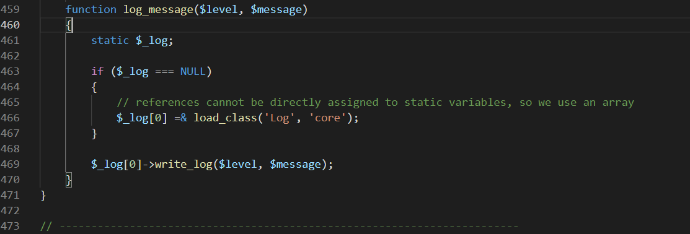
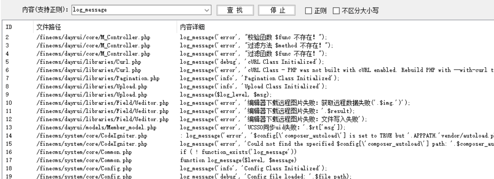
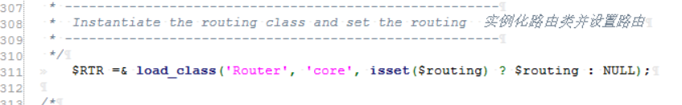

finecmsv5.3.0代码审计
前言
关于finecmsv5.3.0的几个xss的复现。一开始自己去看这个代码的话，mvc架构代码，找到主文件夹和路由参数，但是整体结合功能点看下来自己还是审不出来什么点，有一个前端的任意文件上传，但是存在于2.几的版本，所以还是参考别人的文章自己做了过程分析和记录。
过程
finecms\system\core\Log.php
在log文件下有一个write_log方法，

从218行开始，可以看到$msg参数没有经过任何过滤直接通过fwrite函数写入到文件$fp中。全局搜索哪里调用了该函数。
在/finecms/system/core/Common.php中有一个log_message函数，调用了write_log函数写入数据。

再继续全局查看log_message函数的调用:

该函数的调用点很多，我们找到有参数传入的地方一个个查看，找到/finecms/system/core/Exceptions.php文件有一个show_404方法，用于做404界面的输出。
再查找show_404方法的调用点：
找到/finecms/system/core/CodeIgniter.php文件查看：
通过$class和$method设置路由参数，在文件中设置了$RTR用于实例化路由并设置路由。通过查看代码，我们发现$class代表的是路由设置中的c，也就是文件名的参数，$method代表的是方法名：

当$class和$method没有被定义的时候，$e404为false，此时就会执行show_404方法，从而调用log_message，最终调用write_log写入数据到日志文件中，输出404的错误页面提示。
因此我们尝试使用不存在的路由变量进行前台的xss注入：
再登录后台查看错误日志，弹出111：

证明此处存在存储型的xss。
再结合xss平台盲打cookie就可以得到后台的cookie进行后台登录。
finecms/dayrui/controllers/Install.php
安装程序时的第三步，存在参数可控，追踪$data的来源:

在代码上方75行处，通过post函数传入参数：

跟进post函数查看：
/finecms/system/core/Input.php：
继续跟进_fetch_from_array()函数：在同一文件下，
该函数的输出中，
如果$xss_clean为真的话，调用security里面的xss_clean函数进行xss检测。xss_clean是一个过滤函数，这里$xss_clean默认的值为false，在finecms\dayrui\config\config.php文件中能找到这个全局变量：
也就是说这里传入的数据是没有经过xss检测过滤的。因此我们考虑在一开始的$data可控数据中写入代码执行命令。这里选择的参数是dbprefix，其他参数是唯一固定的，也可以是dbname处。
在此处写入PHP代码getshell，注意一下前后闭合即可。
能成功执行并写入文件：
如果global_xss_filtering的全局变量默认为true，那么我们跟进xss_clean函数的具体写法:
过滤了大量的命令执行关键字、符号，但是单引号没有被过滤，因此可以采用类似system/()/(‘whoami’)的方式绕过关键字的过滤。这里是直接参考别人的写法的点。
finecms/dayrui/controllers/admin/Site.php
在该文件中，如果存在post提交的数据，$_data接收post方法处理过的参数值，如果domain字段即域名没有被使用，则通过update将该字段的值更新到site数据库中。
这里存在cache函数，跟进查看函数定义：
在finecms\dayrui\models\Tag_model.php中，$data变量从get_site_data函数中获取，返回的是一个数组值。在338行$t[‘domain’] && $domain[$t[‘domain’]] = $id中，为$domain这个数组变量增加了一个$t[‘domain’]变量的键名，也就是上方domain字段的域名值。
在最后$domain经过to_require_one函数处理，跟进函数进行查看：
利用传入的 $var值，所以执行最后的else语句，to_require_one()函数不会对键名进行检测和过滤，刚好这个键名字段也是我们可以控制输入的值（也就是上方传入的$t[‘domain’]，也就是我们可控的可以插入数据库中的域名domain字段），因此存在可以利用的点，而_format_value函数会对值进行关键字的过滤。
1 | POST /admin.php?c=site&m=index&func=assert&evil=system('whoami') |
如果直接写入system函数的话，其中的括号会被编码掉：
原文中的payload是这样写的：
1 | ids[]=1&data[1][name]=FineCMS&data[1][domain]=127.0.0.1'=>1).die($_GET['func']($_GET['evil'])// |